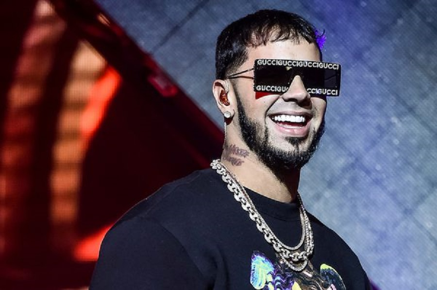

Proveniente de una familia de clase media de Carolina, Puerto Rico.3 Anuel nació el 27 de noviembre de 1992, siendo hijo de Nilda Santiago y del músico y empresario José Gazmey, quien fue vicepresidente de A&R de Sony Music en Puerto Rico,4 quien es amigo del también cantante Tempo.3 Realizó estudios en el colegio María Auxiliadora en Carolina, y en el transcurso de su formación fue mostrando interés por la música comenzando su carrera en 2010 bajo el sello de Maybach Music."
Anuel AA comenzó a grabar en 2010 a dúo con el artista Casper Mágico formando así el dúo Anuel & Casper5, uno de los temas de este dúo fue Somos Gangstas que puede ser encontrado fácilmente en internet6, también se grabó otros temas y el dúo tenía el pie adelante en seguir hasta que Casper fue arrestado por narcotráfico y Anuel quedó como solista.7 Siendo solista lanzó su primer titulado musical fue Demonia en compañía de Ñengo Flow a finales del 2011. Se mantuvo grabando durante los siguientes años temas como No se enamora o No Love, ambas lanzadas en 2012, en 2013 lanzó temas como Pronto volveré o 3 Some, hasta que gracias a la ayuda de Ñengo Flow, Ozuna, entre otros, comienza a ganar popularidad en Puerto Rico y Estados Unidos en el 2014. En este año lanzó temas como Esclavo de tu cuerpo, Street Poem, entre otros.
En 2015 lanzó su sencillo «Nacimos pa' morir» junto a Jory Boy que le dio un reconocimiento temporal. A principios de 2016, se dio a conocer mundialmente con la canción La ocasión (producida por Hear This Music), la cual contó con la participación de Ozuna, Arcángel y De La Ghetto. El rapero y empresario estadounidense Rick Ross, lo contrató para la disquera Maybach Music Group, disquera también de French Montana.8 El 3 de abril de 2016 fue puesto bajo arresto, por lo que su carrera como artista se vio estancada. En 2017, los agentes de Anuel AA pusieron una demanda en contra de "Maybach Music" por «violar sus derechos de autor, impagos de regalías, incumplimiento de contrato y mal uso de su imagen».9 También está contratado en la compañía del cantante Ñengo Flow, Real G4 Life.10 El 12 de mayo de 2018, Anuel AA fue puesto en libertad, después de estar dos años, un mes y nueve días, pero volvió a prisión 22 días después, hasta cumplir con el resto de su sentencia. El 17 de julio de 2018, Anuel AA salió de prisión definitivamente, cumpliendo su condena de 30 meses.
VIDEOS DE ANUEL AA